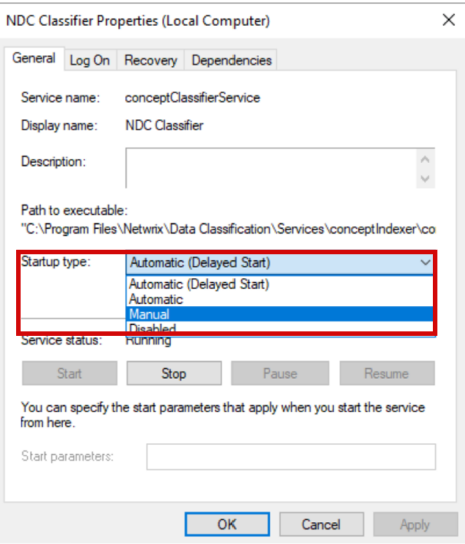
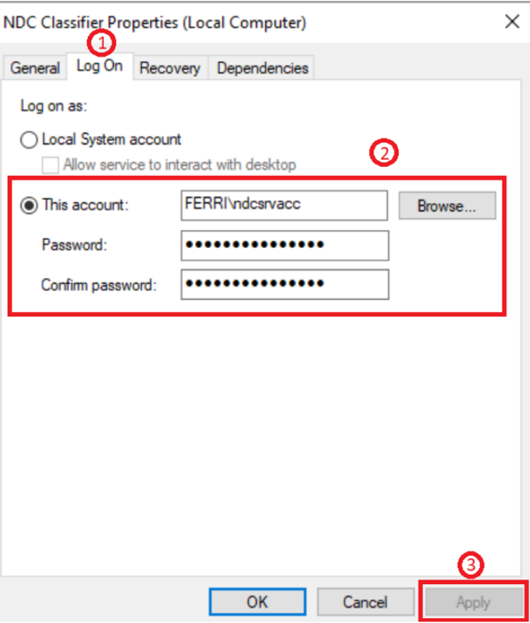
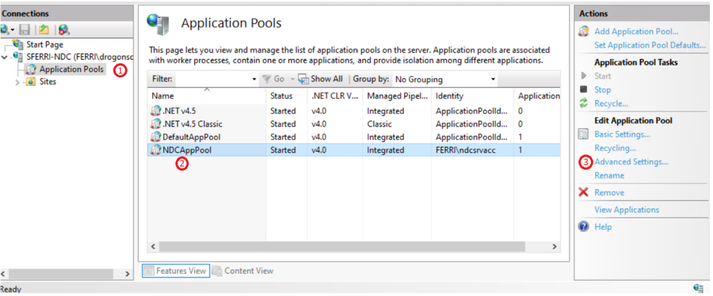
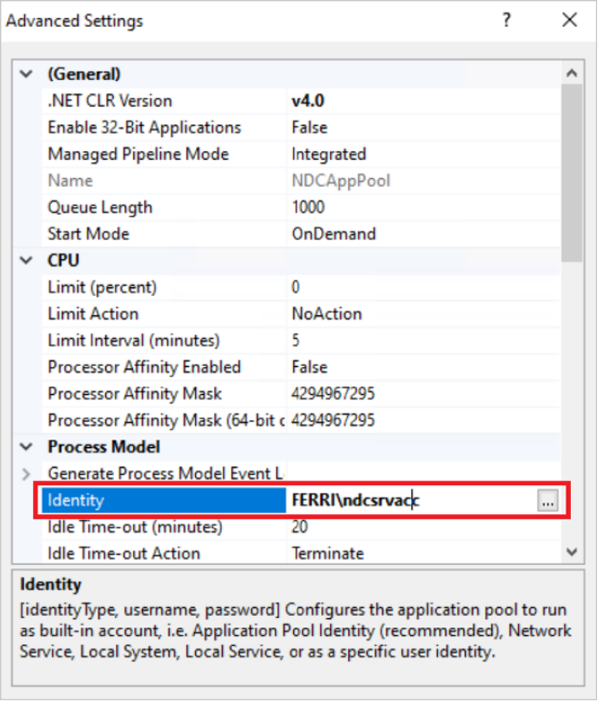
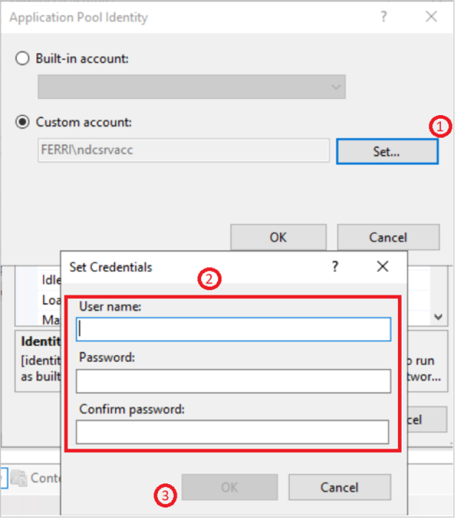
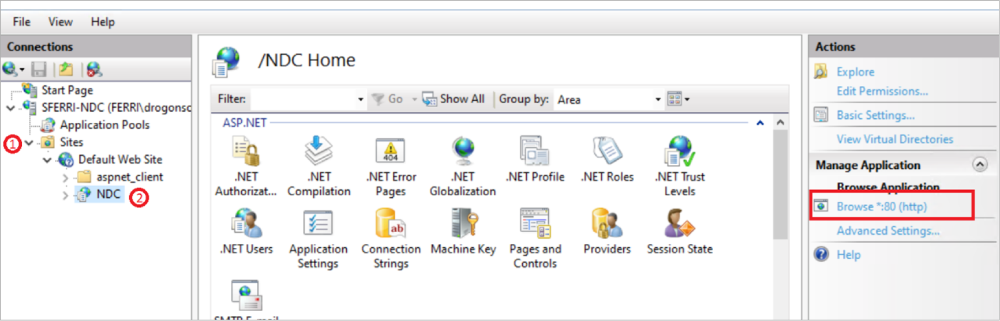
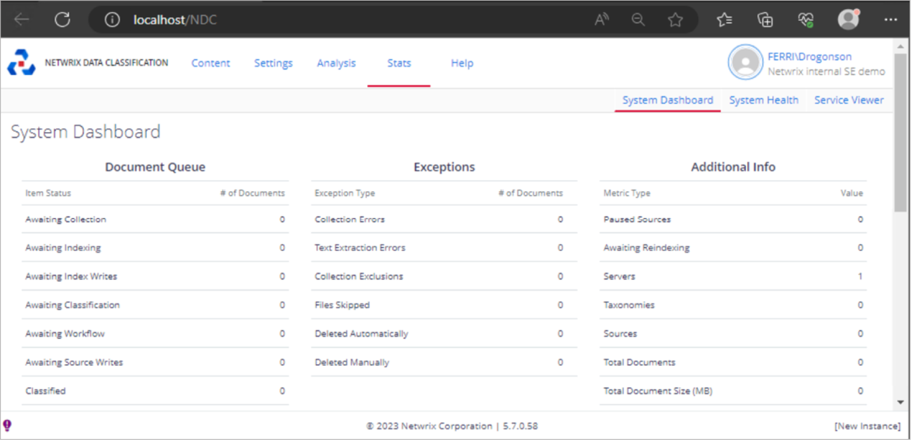
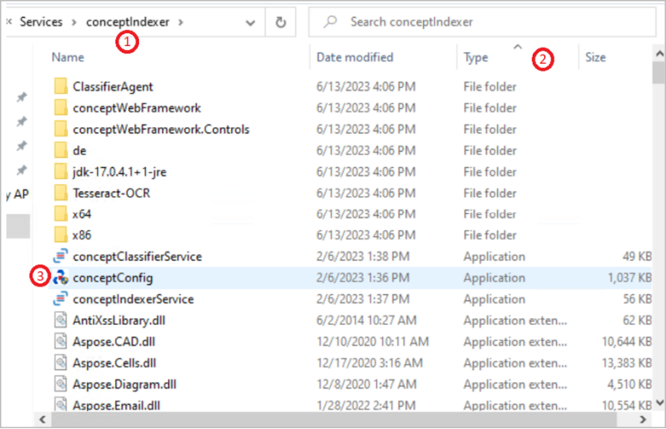
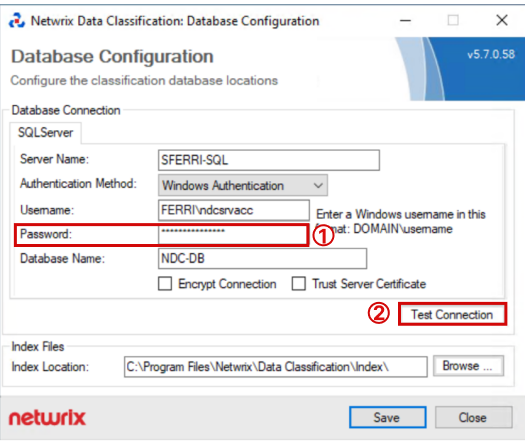

Before You Start
IMPORTANT: this article is made for versions 5.6 and 5.7. Variation in the service name is very likely as between these two major versions they were changed. If you previously had 5.6 and upgraded to 5.7, you will retain old service names, if a fresh install, you get new service names. Keep it in mind if setting up Distributed Query Server (DQS) where one server was set up before the others in your environment (read more about applying DQS mode in Configuring NDC Servers Cluster and Load Balancing with DQS Mode ・ v 5.7).
Check Your Netwrix Data Classification Version
Check for the current NDC version on any of the NDC pages
Check Service Names
| 5.7 but upgraded from 5.6.x.x | Fresh install of 5.7.x.x |
|---|---|
| ConceptCollector | NDC Collector |
| ConceptIndexer | NDC Indexer |
| ConceptClassifier | NDC Classifier |
Instructions
-
Login to your NDC server(s)
-
Stop the services:
-
Press WIN + R on the keyboard
-
Enter services.msc. and click OK
Result: the Services window appears
-
Right click a service with the Running status and select Stop
TIP: you can change startup type to Manual, so then they don’t startup on their own: -
-
In the Services window, scroll down to find the following services:
-
NDC Classifier
-
NDC Collector
-
NDC Indexer
-
-
For each service, do the following:
-
Right click a service name, select Properties and go to the Log on tab
-
Enter new password
-
Click on Apply
-
-
Launch the Internet Information Services / Internet Information Services Manager (IIS) and do the following:
-
Expand the server and head into Application Pools
-
Look for your corresponding application.
NOTE: there is a variation in name between versions:V5.7 but upgraded from 5.6.x.x: ConceptQSAppPool
Fresh install of v5.7.x.x: NDCAppPool
-
Click on the application and then on the right pane, click on Advanced Settings

-
-
Once you are in the Advanced Settings, go to Process Model > Identity > ...
 -
In the Application Pool Identity window do the following:
-
Click on Set
-
Enter new credentials (always enter your domain before the user as not doing so can cause problems later)
-
Click on OK

-
-
Since you are in the IIS, head into your NDC webpage by doing the following:
-
Expand the Sites folder
-
Expand Default Web Site then click on NDC2 or ConceptQS
-
Click on Browse on the right pane
Result: the NDC's System Dashboard section appears:
IMPORTANT: follow the steps below if only you have setup the same Service Account for more than just the services such as SQL Access or SQL Server Instance Services
-
-
Go to your NDC installation directory. The default directory varies depending on the version:
-
V5.7 but upgraded from 5.6.x.x:
c:\Program Files\conceptsearching -
Fresh install of 5.7.x.x:
c:\Program Files\Netwrix\Data Classification
-
-
Go to the Services folder and do the following:
-
Open the conceptindexer folder
-
To sort documents, click Type once
-
Open the ConceptConfig.exe file

-
-
In the Netwrix Data Classification: Database Configuration window, proceed as follows:
-
Change user password
-
Click on Test Connection to have NDC try to connect with your new credentials
Result: a dialog window with the Connection Test Succeeded message appears.
-
-
Repeat for the other service folder
-
Go to
c:\inetpub\wwwroot\NDC(or ConceptQS) and repeat the same process as above (classify by type and launch ConceptConfig.exe)